Випадковою величиною називається змінна величини, значення якої залежить від випадку. Випадкові величини поділяються на дискретні та неперервні.
Випадкова величина називається дискретною, якщо її можливі значення ізольовані, розташовані окремо від інших. Випадкова величина називається неперервною, якщо її можливі значення заповнюють деякий інтервал.
Випадкову величину можна задати одним із трьох способів, задаючи:
а) функцію розподілу;
б) закон розподілу;
в) числові характеристики.
Функцією розподілу 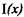 називається імовірність того, що вона
випадкова величина прийме значення менше хдобто
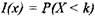
Функція розподілу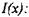
а) неперервна зліва;
б) не спадна на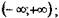
в)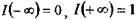 Має місце рівність: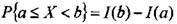
Законом розподілу називається будь-яке завдання випадкової величини, з якої можна одержати функцію розподілу.
Таблицею розподілу називається таблиця, що місить значення випадкової величини та імовірності їх появи.
Щільність розподілу 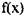 називається будь-яка функція, з якою
функція розподілу пов'язана рівністю:
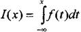
Очевидно, що 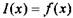, тому функцію щільності називають
диференціальною функцією розподілу. Щільність розподілу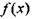- невід'ємна функція,
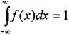
ПРИКЛАД 1:
Знайти функцію розподілу, математичне сподівання та дисперсію випадкової величини X.
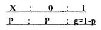
РОЗВ'ЯЗОК: Функція розподілу:
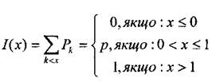
Математичне сподівання
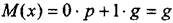
Дисперсія
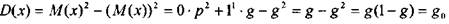
ПРИКЛАД 2:
Дана функція розподілу випадкової величини X:
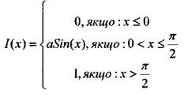
Знайти:
а) диференціальну функцію розподілу;
б)імовірність того, що в результаті випробувань X набуде значення, що належить проміжку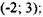
в) математичне сподівання.